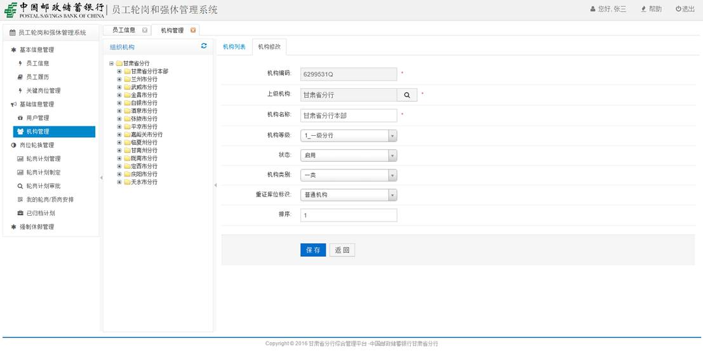
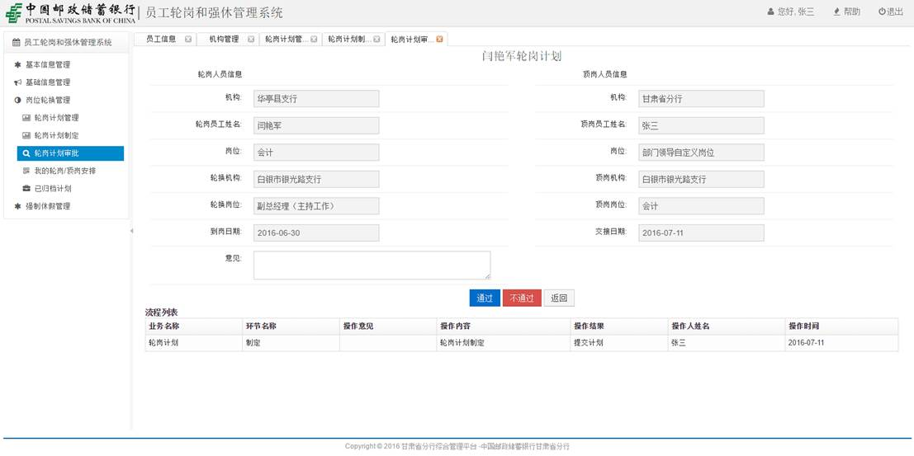

甘肃省分行
员工轮岗和强休管理系统
操作手册
杭州米阳科技有限公司
2016年6月
目录
第一章引言
1.1编写目的：
本操作手册为甘肃省邮政储蓄银行员工轮岗和强休管理系统操作手册。编写本操作手册的目的是充分叙述本软件所能实现的功能及其使用方式，以便使用者了解本软件的使用范围和使用方法，并为软件的维护和更新提供必要的信息。
1.2 系统用户说明
n 系统管理员:查看员工详细信息、管理员工履历、设置关键岗位、轮岗计划定制、强修计划定制、管理归档计划等。
n 普通员工：管理和查看本人个人信息、执行轮岗计划、执行强修计划等。
1.3.使用环境：
系统部署在邮政储蓄银行内网工作网络中，请在工作网络环境下使用。
1.3.1操作系统：
支持windows xp、windows 7、windows 10。
1.3.2浏览器支持：
支持谷歌浏览器（Chrome）、火狐浏览器、360浏览器、IE浏览器（最低版本IE8）等。
推荐使用：谷歌浏览器（Chrome）。
1.3.3地址输入：
输入地址时请注意大小写。
1.4如何使用：
1.4.1在浏览器地址中，输入：
http://10.249.240.11:8800/GPIPortal，进入综合业务门户系统，在系统应用区域点击员工轮岗和强休管理系统图标，进入系统。
1.4.2登录：
登录账号为：个人身份证号（字母‘X’必须为大写），初始密码默认为：123456
第二章操作说明
2.1基本信息管理：
2.1.1员工信息
1） 组织机构，点击相应机构，显示当前机构下所有用户信息
2） 搜索区，输入过滤条件，显示相应用户简讯
2.1.2员工履历
1） 组织机构，点击相应机构，显示当前机构下所有员工的履历
2） 搜索区，输入过滤条件，搜索相应条件下员工的履历
搜索员工履历：
3） 操作区，显示当前员工的详细履历
员工履历详情：
1） 选项区，履历列表展示，履历添加
添加履历：
2） 操作区，修改履历、删除履历
修改履历：
删除履历：
2.1.3关键岗位管理
1） 搜索区，输入过滤条件，搜索相应的关键岗位
2） 操作区，关键岗位详细信息
2.2基础信息管理：
2.2.1用户管理
1） 组织机构，点击相应机构，显示当前机构下的所有用户
2） 选项区，用户列表展示，用户添加
添加用户：
3） 搜索区，输入过滤信息，搜索相应条件的用户
4） 操作区，修改、删除、重置用户密码
修改用户信息：
删除用户：
重置用户密码：
2.2.2机构管理
1） 组织机构，点击相应的机构，显示当前机构下所有子级机构
2） 选项区，机构列表展示，机构添加
添加机构：
3） 操作区，删除、修改、添加下级机构
修改机构：

注：最顶级机构不能修改也不能删除
删除机构：
2.3岗位轮换管理：
2.3.1轮岗计划管理
1） 轮岗计划流程，轮岗计划流程在各个步骤的状态详情、督办轮岗计划、轮岗计划归档
确认轮岗计划、顶岗计划执行情况
轮岗计划归档：
2） 操作，轮岗计划在各个步骤、阶段时的详情
2.3.2轮岗计划定制
1） 组织机构，点击相应机构，显示当前机构下所有需要轮岗的用户列表
2） 搜索区，输入过滤条件，搜索相应条件的用户
3） 操作区，制定相应用户的轮岗计划
2.3.3轮岗计划审批
1） 搜索区，输入搜索条件，搜索相应轮岗计划
2） 批量审批，轮岗计划批量审批通过、不通过
3） 单个审批，单个审批轮岗计划、轮岗计划详情

2.3.4我的轮岗/顶岗安排
展示当前登录用户需要确认执行、交接的轮岗、顶岗计划
2.3.5已归档计划

展示以及完成的轮岗、顶岗计划
查看已归档计划的详情
2.3强制休假管理：
2.3.1强制休假管理
1） 强修计划流程，强修计划流程在各个步骤的状态详情、督办强修计划、强修计划归档

2） 搜索区，输入过滤条件，搜索当前条件下的抢修计划
2.3.2岗位强修计划制定
2.3.3强修计划审批
1） 搜索区，输入过滤条件，搜索当前条件下的强修计划
2） 操作，对强修计划进行审批

2.3.4我的强修、顶岗安排
强修/顶岗计划接收、交接:
2.3.5已归档计划
1） 搜索区，按条件查询已归档强修计划
2） 操作，查询已归档计划详情